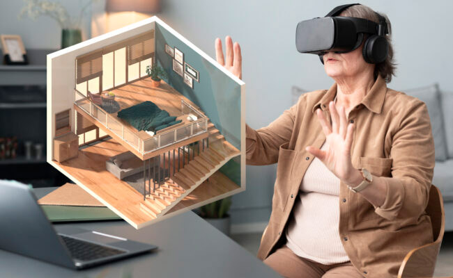
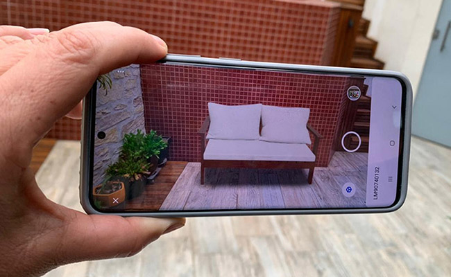
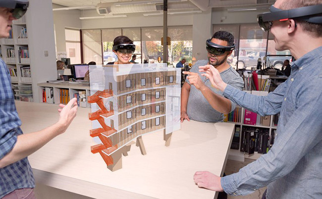
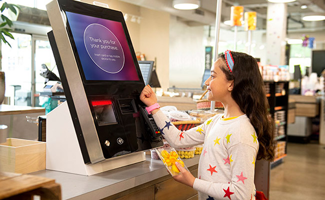
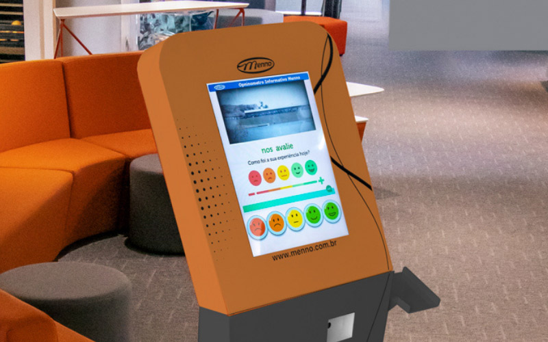
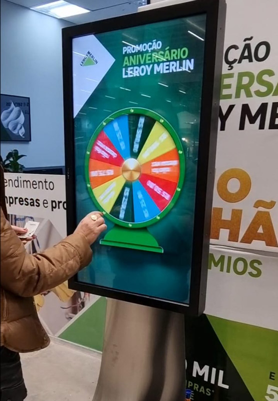
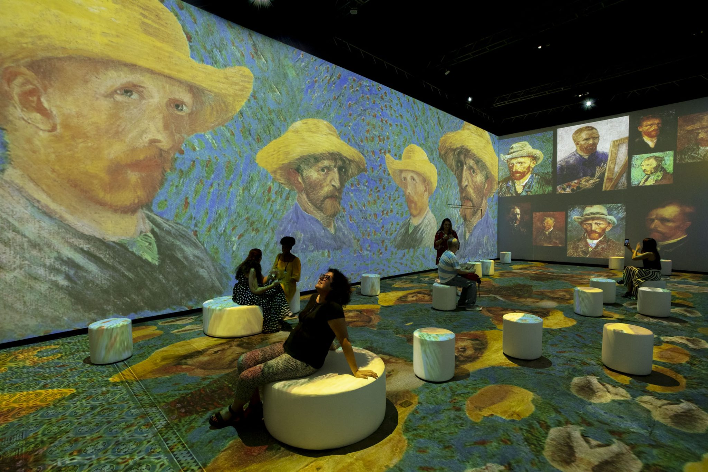

Atualmente, os pontos de venda não são apenas locais para a compra de produtos, são também espaços de interação, experiência e conexão do consumidor com as marcas.
A crescente evolução tecnológica traz consigo muitas ferramentas capazes de redefinir completamente a forma como os consumidores interagem com os produtos e serviços, tornando a linha entre o mundo físico e digital cada vez mais tênue.
Imagine poder experimentar um produto antes mesmo de tê-lo em mãos; ser transportado para outro mundo por meio de óculos especiais; ou receber recomendações personalizadas no exato momento em que você considera uma compra. Essa é a realidade nos pontos de venda atuais, nos quais a inovação tecnológica não é apenas uma opção, mas uma necessidade para se destacar em um mercado competitivo e em constante evolução.
Neste conteúdo, você conhecerá as recentes tendências de automação e tecnologia aplicadas nos pontos de venda. Também explorará a fusão de realidades: realidade virtual, aumentada e mista; as possibilidades interativas proporcionadas por superfícies touch screen e projeções mapeadas; a integração inteligente de dispositivos conectados; e aplicativos que transformam a jornada do consumidor.
Essas inovações estão moldando não apenas a experiência de compra, mas também o futuro do varejo. A criatividade e a tecnologia unem-se para criar experiências imersivas e personalizadas ao consumidor, que redefinem não só o conceito tradicional de compra, mas também o espaço em que será inserido.
O avanço tecnológico nos pontos de venda tem um grande impacto no design de interiores, influenciando leiautes e disposições, personalização e estética, uso de materiais inovadores e uma maior adaptação e flexibilidade do espaço para acomodar mudanças e alterações frequentes do ambiente.
Que tal começar a explorar este conteúdo?
Uma experiência imersiva representa levar o consumidor para algo que ele jamais vivenciou, tornando o contato com a marca mais personalizado e único. É a construção de um ambiente planejado e imaginário, que transforma a experiência de compra ou navegação em algo completamente novo. Em um cenário de muita disputa para conseguir a atenção do seu público, essa é uma estratégia que pode ser muito eficiente. Mais do que oferecer uma solução, produto ou serviço de qualidade, é preciso fazer um trabalho de encantamento do público.
Está cada vez mais simples, rápido e prático fazer compras on-line. Por conveniência, as pessoas prezam pela praticidade, estão mais conectadas, mais bem-informadas e mais exigentes.
Diante do cenário competitivo entre o on-line e o off-line, o ponto de venda físico precisa investir e aplicar a tecnologia a seu favor. Isso serve para que as marcas demonstrem seu valor intangível, criando ações que ofereçam atendimento humanizado e personalizado ao consumidor e proporcionando conexões emocionais, a fim de que, por meio de experiências, atraiam e fidelizem seus clientes.
As pessoas estão cada vez mais fascinadas por tecnologia e compra de eletrônicos modernos, surgindo, com isso, o desejo consumista compartilhado pela maior parte da população. É por esse motivo que a tecnologia se torna um diferencial nos pontos de venda, atraindo ainda mais a busca pela satisfação dos clientes.
A partir do uso de tecnologias inovadoras, é possível levar o consumidor a lugares inimagináveis, apresentando-o a uma experiência única e contagiante com a sua marca. A motivação está em melhorar a experiência de compra desse consumidor. Com isso, o processo de vendas ganha uma nova dimensão e recursos infinitos com uso de soluções interativas, por exemplo, vídeos, demonstrações em três dimensões, catálogos virtuais completos de informações, visitas e test drives virtuais, que são recursos aplicados a partir da realidade virtual, da realidade aumentada e da realidade mista.
A realidade virtual é uma imersão total em um ambiente que só existe no formato on-line, fazendo com que o usuário seja parte de determinados ambientes digitais, em outra dimensão, e assim a fronteira entre o mundo físico e o digital se fundem. A imersão na realidade virtual é possível com o uso de equipamentos como óculos e fones de ouvido, oferecendo uma visão em 360º e em três dimensões.
O design de interiores é uma área que demanda um planejamento minucioso para a criação de projetos que atendam às expectativas dos clientes, e o profissional tenta de diversas maneiras apresentar suas ideias de forma clara ao cliente. Nesse contexto, a realidade virtual torna-se uma ferramenta interessante e de grande auxílio. Ela proporciona uma melhor visualização dos projetos, criando um ambiente totalmente virtual, imersivo e independente do mundo real, permitindo a visualização tridimensional dos projetos e conduzindo o espectador para uma imersão virtual no ambiente construído. Isso garante uma experiência sensorial muito mais intensa, possibilitando a compreensão mais clara das proporções, das medidas e da relação com o espaço.

Experiência de realidade virtual com óculos e fones de ouvido
Fonte: Mourão (2023)
A imagem mostra uma mulher madura sentada em uma cadeira. Ela está em um ambiente residencial com sofá e decorações ao fundo, à frente de uma mesa de trabalho. Sob a mesa estão seu notebook e pastas de papel. A mulher está usando um óculos de grande formato, específico para leitura digital de realidade virtual, e fones de ouvido. A mulher está com as mãos levantadas, como se estivesse mexendo em algo diante dela. Em frente à mulher está a imagem digital de uma casa de dois andares. Essa imagem está em 3D e em perspectiva, sem as duas paredes frontais, deixando visível a disposição dos móveis e outros elementos do ambiente interno. A imagem mostra a mulher tendo uma experiência imersiva, de apresentação de projeto de interiores, a partir da realidade virtual.
A realidade aumentada funciona de forma semelhante à realidade virtual, mas, em vez de transportar o cliente para um novo espaço, a realidade aumentada usa o próprio ambiente físico no qual a pessoa se encontra para realizar a experiência de imersão. A ideia é inserir elementos virtuais no ambiente físico e criar uma experiência visual diferenciada. É uma tecnologia bastante acessível, já que pode ser aplicada por meio de dispositivos que estão na rotina da maioria das pessoas: os smartphones ou tablets.
Empresas do ramo de decoração já começaram a explorar a realidade aumentada, criando aplicativos que permitem simular como ficarão instalados os móveis e as decorações no ambiente físico dentro da casa do consumidor. O cliente escolhe por catálogo o item desejado e, por meio da realidade aumentada, pode simular aquele objeto posicionado em seu ambiente real e físico. A realidade aumentada garante uma experiência diferente e inovadora, auxiliando o cliente para uma compra com mais facilidade e segurança e sendo, por outro lado, um diferencial na venda da empresa.

Realidade aumentada na decoração de ambientes
Fonte: Rodrigo (2023)
A imagem mostra um ambiente de área externa, semelhante a um terraço, com uma área construída mais elevada ao fundo, onde está localizada uma piscina pequena. À frente dessa estrutura da piscina forma-se um pequeno muro. No canto da imagem há uma mão segurando um smartphone com a câmera ligada e apontada para esse muro. A câmera está mostrando o ambiente existente, mas simulando a inserção de um sofá de madeira de dois lugares neste mesmo local, porém esse móvel está apenas em formato digital, sendo mostrado como realidade aumentada no smartphone.
A realidade mista combina elementos virtuais e físicos, permitindo a interação entre os dois mundos. Há uma sobreposição de informações digitais em produtos físicos ou a criação de experiências envolventes que mesclam elementos reais e virtuais. É semelhante à realidade aumentada, que sobrepõe objetos virtuais no ambiente, e a realidade mista não apenas sobrepõe, mas ancora objetos virtuais no mundo real.
Confira na figura quatro profissionais projetando uma edificação sobre a mesa por meio da realidade aumentada. No ambiente físico, dois desses profissionais que visualizam o modelo gerado ainda podem movimentá-lo.

Realidade virtual mista
Fonte: TotalCAD (2019)
A imagem mostra quatro pessoas em um local de trabalho ao redor de uma mesa e utilizando óculos de realidade virtual. Dois estão apontando e olhando para a imagem virtual gerada sobre a mesa de trabalho, representando o desenho gráfico de uma edificação.
A presença da tecnologia de tela sensível ao toque, ou touch screen, é encontrada nos estabelecimentos comerciais de qualquer seguimento. Você já deve estar familiarizado com essa tecnologia em seu dia a dia. As telas interativas desempenham diversas funções atualmente, como, por exemplo, pagamento de contas, informações e autosserviços.
É importante lembrar que a apresentação mostrada na tela deve ser bastante intuitiva, permitindo o entendimento rápido do usuário dessa tecnologia, pois seu objetivo é facilitar um atendimento e torná-lo mais eficiente, diminuindo o tempo de espera em filas, por exemplo.
É possível trabalhar muitos recursos nas telas de touch screen. Confira alguns exemplos:
Os terminais de pagamento com telas touch screen facilitam o processo de self-checkout (autopagamento). Esses terminais permitem que os clientes selecionem itens, insiram informações e efetuem seus pagamentos apenas com toques na tela. Esse recurso torna algumas transações simples do cotidiano mais rápidas e eficientes.
Dispositivos touch screen podem funcionar como catálogos interativos, permitindo que os clientes naveguem por produtos e preços e até mesmo realizem pedidos diretamente pelo dispositivo, sem a necessidade de atendimento humano.
Em ambientes como restaurantes ou cafeterias, telas sensíveis ao toque são usadas para que os clientes façam seus pedidos personalizados sozinhos e de forma rápida, para depois retirá-los direto no balcão.

Terminal de pagamento em tela de touch screen
Fonte: Diebold Nixdorf (c2024)
Fotografia de um ambiente de supermercado apresentando a cena de uma menina em frente a um terminal de pagamento com tela touch screen. A menina está registrando a compra do pacote que está em suas mãos e com o seu relógio smart, efetua o pagamento na máquina de cartão embutida na estrutura da tela.
As telas interativas podem ser usadas para entreter os clientes enquanto estes aguardam, oferecendo informações sobre produtos e promoções, pesquisas de satisfação ou até mesmo jogos interativos para envolver o público.

Terminal de pesquisa de satisfação em tela de touch screen
Fonte: Menno (2022)
Fotografia de um totem de cor laranja localizado em um ambiente comercial, com uma tela em touch screen disponível para os usuários. Na tela há informações de pesquisa de satisfação para o usuário tocar em emojis de carinhas felizes ou tristes, para avaliar o seu atendimento no local.

Terminal tela de touch screen com jogos interativos
Fonte: Star Midia Digital (c2024)
Fotografia de uma pessoa em frente a um totem vertical alto, com uma tela grande que ocupando metade de sua altura de estrutura. Na tela touch screen há uma roleta colorida, com o intuito de fazer um jogo junto ao usuário.
Projeção mapeada é uma técnica de projeção que utiliza recursos de tecnologia, como animação em 3D (tridimensional) para projetar imagens sobre qualquer superfície, até mesmo em planos irregulares, como paredes, automóveis e prédios.
A tecnologia de projeção mapeada traz inúmeras possibilidades para criar um cenário específico de vendas, que personaliza o trabalho realizado para a marca.
A projeção mapeada nos pontos de venda pode ser uma estratégia incrivelmente envolvente para atrair a atenção dos clientes, criar experiências imersivas e destacar produtos ou serviços.
Confira esta exposição de arte realizada totalmente em projeção mapeada. A mostra multimídia Van Gogh e seus Contemporâneos – Exposição Imersiva aconteceu em 2022, no Museu de Arte Contemporânea de Niterói (MAC). As obras do artista Van Gogh estavam projetadas em todos os planos do ambiente, inclusive nos móveis, gerando uma experiência imersiva impactante ao espectador.

Exposição de Van Gogh em projeção mapeada
Fonte: DASartes (c2024)
Fotografia de uma exposição de arte em mídia. A exposição mostra pinturas e obras de arte do artista Van Gogh, mas de maneira digital e projetada nas paredes, no chão e na superfície dos móveis. Há pufes redondos espalhados pelo ambiente e seis pessoas sentadas em diferentes pufes, observando as obras.
Em resumo, a integração de automação e tecnologia nos pontos de venda marca uma era emocionante de experiências imersivas.
A utilização de todos os aplicativos e dispositivos estudados neste conteúdo vem redefinindo a maneira como os consumidores interagem com os estabelecimentos comerciais.
Essas inovações não apenas proporcionam eficiência operacional, reduzindo o tempo de espera e simplificando processos, mas também criam um ambiente envolvente e personalizado para os clientes, afirmando a importância da tecnologia nos pontos de venda.